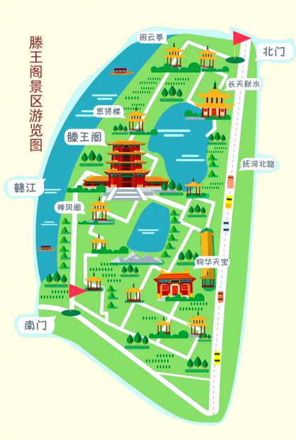

互动地图 · 必访点位 · 路线推荐

国家5A级景区核心建筑，仿宋风格，净高57.5米，建筑面积13000平方米。登阁可俯瞰赣江全景，感受"落霞与孤鹜齐飞"的壮丽景象。建议游览时间2-3小时。
位于景区北部的高处亭阁，取"闲云潭影日悠悠"之意。登亭可远眺赣江与南昌城景，是景区内最佳的观景休憩之所。
取自"秋水共长天一色"，是景区内临赣江的观景平台。傍晚时分在此欣赏赣江落日，是摄影爱好者的绝佳取景点。
位于滕王阁西北侧，为纪念历代文人墨客而建。楼内陈列有与滕王阁相关的诗词碑刻与书画作品。
位于景区西南部，与思贤楼遥相呼应。阁名取自《滕王阁序》中"千里逢迎，高朋满座"的盛景描绘。
取自"物华天宝，龙光射牛斗之墟"，是景区南部的标志性门楼建筑，也是南门入口处的主要景观。
景区主要入口之一，临近抚河北路。建议从此门进入，沿主路向南游览至滕王阁主阁。
景区南部入口，临近赣江边。从此门进入可先欣赏江景，再向北游览至主阁。